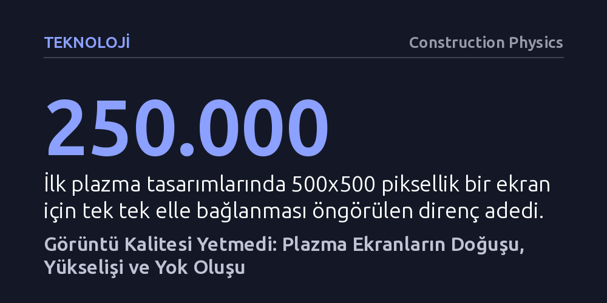

TEKNOLOJI · Construction Physics · 2026-10-09
Plazma ekranlar, bilgisayar belleğinin pahalı olduğu bir dönemde katot tüplerine alternatif olarak doğdu; ancak üstün renk ve kontrastına rağmen LCD'nin ezici üretim maliyeti avantajına yenilerek tamamen yok oldu. Yazı, niş teknolojik üstünlüklerin devasa sermaye gerektiren üretim hatlarını yaşatmaya yetmediğini gösteriyor.
Teknik açıdan üstün bir ürünün her zaman piyasada kalamayacağını, üretim verimliliği ve ölçek ekonomisinin saf görüntü kalitesinden daha belirleyici olduğunu gösterir.

1960 yılında Illinois Üniversitesi'nde geliştirilen PLATO, binlerce öğrencinin ana bilgisayarlara bağlanarak matematik, kimya ve yabancı dil öğrenebileceği öncü bir bilgisayarlı eğitim ağıydı. Ancak sistemi binlerce terminale yaymanın önünde çok temel bir donanım engeli vardı: Ekran teknolojisi. O dönemin standart televizyon ekranları, görüntüyü oluşturmak için bir elektron demetinin cam yüzeyi saniyede 30 kez taramasına dayanan katot ışın tüplerini (CRT) kullanıyordu.
Televizyon yayınında herkes aynı sinyali aldığı için CRT gayet iyi işliyordu. Ancak PLATO sistemindeki her terminalin öğrencinin hareketlerine göre farklı veriler göstermesi gerekiyordu. Bu durum, ana bilgisayar ile uç birimler arasında yüksek bant genişliğine sahip bağlantılar kurulmasını ve her terminale o yıllarda astronomik fiyatlara mal olan yüklü miktarda video belleği yerleştirilmesini zorunlu kılıyordu. Tasarımcıların aradığı şey, yalnızca değişen piksellerin yeniden çizilmesini sağlayan, kendi dahili hafızasına sahip yepyeni bir ekran türüydü.
PLATO'nun mimarlarından Donald Bitzer, düşük basınçlı gazın içinden elektrik akımı geçtiğinde parlaması ilkesine odaklandı. 1962'de öğrencisi Robert Willson, üç cam plaka arasına sıkıştırılmış minik bir argon gazı odacığından tek piksellik ilk modeli kurmayı başardı. Ancak bu prototip oldukça kırılgandı; elektrotlarda birikmeler oluyor, gaz sızıyor ve elektrik arkını önlemek için her bir piksele ayrı bir direnç takılması gerekiyordu. 500x500 piksellik bir ekran için çeyrek milyon direnç monte etmek pratik olarak imkânsızdı.
Çözüm 1964'te geldi: Elektrotlar cam sandviçin dışına taşınarak harici direnç ihtiyacı ortadan kaldırıldı. Üstelik bir test sırasında hücreye yanlışlıkla sızan az miktardaki hava, aranan hafıza etkisini kendiliğinden sağladı; elektrotlardaki voltaj düşürülse bile gaz parlamayı sürdürüyordu. 1967'de cam üreticisi Owens-Illinois teknolojiyi lisanslayarak aradaki orta cam katmanı kaldırdı ve tüm paneli kesintisiz gazla doldurdu. Kesişen elektrotlarla piksellerin bağımsız kontrol edildiği 512x512 piksellik 'Digivue', 1971'de PLATO terminalleri için dünyanın ilk ticari plazma paneli olarak piyasaya çıktı.
Plazma ekran tam ticari hayata adım atarken beklenmedik bir gelişme yaşandı: IBM araştırmacıları, verileri transistörler ve kapasitörlerle depolayan dinamik rastgele erişimli bellek (DRAM) mimarisini geliştirdi. Moore Yasası'nın rüzgârını arkasına alan bilgisayar belleği her nesilde hızla küçüldü, ucuzladı ve hızlandı. Böylece plazma ekranın geliştirilme gerekçesi olan CRT ekranların bellek maliyeti sorunu, birkaç yıl içinde önemsiz bir ayrıntıya dönüştü.
Yine de plazmanın önemli bir kozu kalmıştı: Hantal tüplere ihtiyaç duymadığı için son derece inceydi ve elektron tabancası taşımadığı için sarsıntılara karşı dayanıklıydı. 1970'ler boyunca mühendisler elektrotları geliştirdi, güç tüketimini düşürdü ve pikselleri hızla açıp kapatarak gri tonlamayı, ardından da renkli panelleri icat etti. Plazma böylece 1970'lerde banka terminallerinde ve askeri araçlarda, 1980'lerde ise ilk taşınabilir bilgisayarlarda kendine niş bir pazar edindi. Fakat 1990'lara gelindiğinde, hesap makinelerinden çıkan renkli LCD ekranlar dizüstü bilgisayar pazarını tamamen ele geçirerek plazmayı buradan tasfiye etti.
Taşınabilir pazardan dışlanan plazma, kendini çok daha kârlı yeni bir arenada buldu: Büyük ekranlı televizyonlar. O yıllara kadar TV dünyasının tartışmasız lideri olan katot tüpleri, 40 inç boyutunun üzerine çıkmakta zorlanıyordu; nitekim Sony'nin 1988'de tanıttığı 45 inçlik CRT televizyon 180 kilogramı aşıyordu. Buna karşılık ince yapılı plazma paneller dev boyutlara çok daha rahat ölçeklenebiliyordu. 1990'larda Fujitsu'nun öncülük ettiği bu yarış, 2005'te Samsung'un 102 inçlik devasa plazma paneline kadar uzandı.
Ne var ki aynı dönemde LCD üreticileri de büyük yatırımlarla panellerini büyütmeye başlamıştı. Plazma ekranlar sinemaseverlere daha derin siyahlar, zengin renkler ve yüksek yenileme hızları sunuyordu; ancak daha fazla elektrik harcıyor, ısınıyor, daha sönük kalıyor ve piksel yoğunluğunda geride kalıyordu. En kritik fark ise üretim hatlarında ortaya çıktı: LCD sektörüne milyarlarca dolarlık sermaye akarken, plazma ekranlarda yüksek üretim verimliliğine ve düşük maliyete ulaşmak çok daha zor oldu.
2000'lerin ortalarına gelindiğinde LCD ekranlar aradaki kalite farkını büyük ölçüde kapattı ve ortalama tüketici için plazmanın sunduğu görüntü üstünlüğü belirleyici olmaktan çıktı. 2006 yılından itibaren pazar hızla LCD lehine döndü; 2013'e gelindiğinde plazma neredeyse tüm pazar payını kaybetmişti. 2010'ların sonunda ise plazma fabrikaları tamamen kapandı ve teknoloji tarihe karıştı.
Teknolojilerin benimsenmesi ve terk edilmesi genelde tersine bir S-eğrisini izler; eskiyen bir teknoloji ana akımdan çekilse bile kendine has niteliklerini önemseyen sadık bir kitle sayesinde varlığını sürdürür. Örneğin ses tutkunlarının vazgeçemediği vakumlu tüpler, transistörün icadından on yıllar sonra bile özel donanımlar için üretilmeye devam etmektedir. Ancak plazma ekranlar bu şansa sahip olamadı; görüntü kalitesine hayran olan sinema tutkunlarının varlığına rağmen, milyarlarca dolarlık devasa cam ve gaz fabrikalarını sadece niş bir talep için ayakta tutmak iktisadi olarak mümkün değildi.